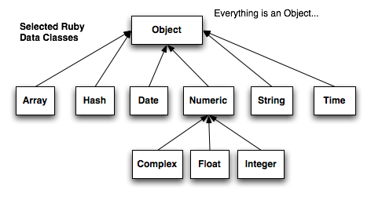

Week 5 Technical Blog - Ruby Classes

Everything is an object in Ruby. All the way down to numbers and strings. And that is a great way to look at it too because everything inherits from object. Object is the root Ruby class that everything is built on.
For that is what an object is, a Ruby class. A class describes what an object is, what it can do, how it works. This fundamental construct is the basis of all object oriented programming languages. It is this ability to define classes or objects that gives the ability to model real world objects and ideas. It is also the power and grace behind object oriented programming.
The idea of a class is that you use it to stamp out objects. Think of classes as a mold and an object as the thing created by the mold. For instance, you can create a car class and then create multiple car objects that are all unique based upon their characteristics like paint color, engine size, and passenger capacity.
We can take this concept even farther by creating a new class for a truck and say that it inherits from car the characteristics paint color, engine size, and passenger capacity. We can then just worry about giving truck the characteristics that make it a truck like bed size, towing capacity, etc...
Classes are created in Ruby using the class keyword followed by a name for the class. We then supply the end keyword to denote the end of the class block. It is also common practice in Ruby to always name you classes starting with a capital letter. Here is an example of what that looks like.
Class Variables vs Instance Variables
When Creating classes in Ruby, we need to be able to define characteristics. We do this through variables just as we would outside a Ruby class but there are notable differences. When we declare a variable in Ruby we have to be aware of the scope the variable was declared in.
When we stamp a new object out using a class we have to think about who owns the characteristics, the class? Or the stamped out object? We use the terms class variable and instance variable to denote the difference. A class variable belongs to the class or the mold while an instance variable belongs to the object created by the class. In this way we make sure that each object derived from a class can have it's own unique characteristics but at the same time can have access to variables meant to be shared across instances.
Class Variables
First lets talk about class variables. We declare a class variable with double @ symbols like this.
This variable would be available across all instances of a class. A good example of a use case for a class variable would be a constant that all instances of a class would need. Using our car analogy, perhaps there is a multiplier needed to figure out torque that is the same for all makes and models of a car. We could then use a class variable to store this information for use across all instances of our car class.
Instance Variables
Next we need to talk about instance variables. We declare a instance variable with a single @ symbol like this.
Instance variables hold data specific to the instance of a class. The variable name would be the same for all instances of a class but the data inside would be unique to the instance. A great example here using our car analogy would be the make and model of the car being created. All cars have a make and model but that make and model would most likely be different for each car we created.
It is also important to remember that instance variables are more often than not set at the time a new object is created. The data is passed in as arguments to the initialize method of a class and then assigned to the instance variables as shown below.
The initialize method is run when a new object is created. By defining this method in out class we can set the values of our instance variables by taking in data from the user.
Getter and Setter Methods
So now that we know a little more about class variables, we need to talk about how to access them. Both class and instance variables are available to your code within your class but what if we want to make variables available outside the class or object? Enter Getter and Setter Methods.
By declaring a method to get and set the value of a variable, we make that data available outside the class or object by using the dot notation. Here is an example of a getter and setter method for the make instance variable of a car class as well as it's use.
And here is an example of a getter and setter method for a class variable torque modifier for a car class and it's use.
Giving access to certain variables outside the class gives flexibility to the user. Using our car analogy, what if the user changes the type of tire that is on his/her car? By giving them access to car.tire, they can now update their car with ease.
Attribute Reader, Writer, and Accessor
Writing all these methods for a class sounds tedious! No body has time for that? I can already hear you saying it. I said it my self. This seems a bit much just to be able to set and retrieve variable data. Is there not an easier way?
Why yes there is and I'm glad you asked. Ruby has provided the following in order to save us poor programmers the time of having to write our getter and setter methods. The methods are created automatically in the background at the time of compilation.
The attr_accessor creates both the getter and setter method for a variable.
The attr_reader creates only the getter method for a variable.
The attr_writer creates only the setter method for a variable.
Class Methods vs Instance Methods
Now that we've covered variables at length, lets dive into methods. No doubt you have already created methods in your introduction to Ruby and you have some understanding of them. We won't got into detail here about what a method is but we will cover the difference between the two types of methods that you can have in your classes/objects. Surprisingly enough, they have to do with scope just like our variables did.
Class Methods
Much like class variables, class methods are available at the class or mold level. Creating an new object from a class and then trying to call a class method on that instance would result in a no method defined error. You could how ever call that class method off the class itself.
To declare a class method we use the self keyword followed by a dot and then our method name. Here is an example of how that looks as well as how it is used.
Instance Methods
By now, you have most likely already guessed that instance methods are much like instance variables in that they are available to the instance of an object created from our class. Good guess!
Instance methods are declared just like any other method. We use the def keyword followed by a method name and then the end keyword. We then do something within the method and return some value. Here is what that looks like as well as how it is used.
Inheritance
Inheritance goes hand in hand with Ruby classes/objects. It is this concept that allows objects to have relationships. Cars and trucks are both vehicles so we can say that they inherit from vehicle. Because all vehicles have common characteristics like turn, stop, etc.. then we can abstract those common items away into a vehicle class.
We could then have a class for car that inherits the traits and abilities from vehicle. We could then create as many unique cars as we wished and they would all be able to turn and stop.
We can create an inheritance between classes by using the less than operator followed by the name of the class we wish to inherit from. Here is an example of how that looks.
Lets Build Some Classes!
Now that we have some fundamental knowledge of what classes are and how they work lets build something to see everything work together.
For this example I've decided to model a golden retriever. To start, we'll build an animal class since at its root, a golden retriever is an animal.
The Animal Class
To begin, lets decide how we wish to describe an animal. For our example, I've decided that the below items need to be a part of our animal class.
- Name
- Age
- Genus
- Can Eat
- Can Sleep
Now that we now what an animal is all about, lets build the class for it.

The Dog Class
Now that we have an animal class, let's build our first dog class and give it some abilities. We'll give our dog the following characteristics and then inherit the rest from animal.
- Can Bark
- Can Dig
- Can Fetch
How it all works together!
Now lets see how we can create a new dog and use the abilities and attributes form the animal class as well as the dog class.
Conclusion
Object Oriented Programming is the corner stone of today's programming languages. Understanding these concepts is key to building software that can mimic the world we live in. It's also the key to building large and complex software that still remains manageable. The ability to abstract away characteristics of something to a class allows for flexibility and robust design.
I've linked some further resources below in hopes that you will take the time to dig a little deeper into Ruby classes. There is so much more that I did not touch here in the post and the sky is the limit as to what you can model and do with classes. Take the time to read through these resources and shore up your understanding of this important concept. Thanks for reading!
Resources